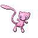
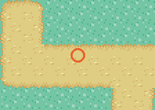
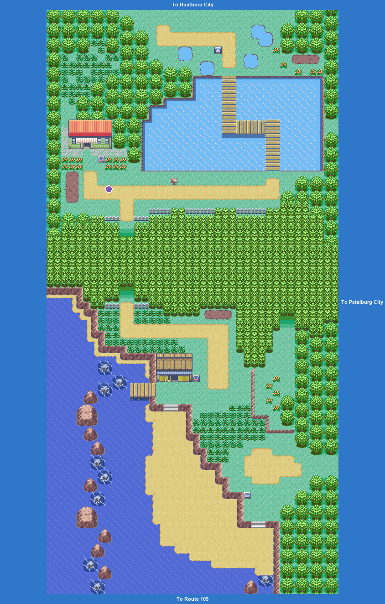

The early Mew: level 28 on Route 104, in the open from three badges, no puzzle. (A second Mew, level 30, waits on Faraway Island after the Hall of Fame; see the ferry quest.)
Catch it and it is gone for good. Knock it out or run and it is back the next time you enter the map.
Walkthrough step 7: Route 104. Reached from: Petalburg Woods, Rustboro City, Route 105, Petalburg City.
